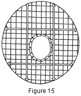
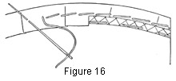
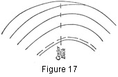

1930—Millinery Processes
by Carlotta M. Brown
BRIM COVERINGS
Smooth-fitting Brim Coverings
Material for a smooth-fitting brim covering should be of good quality and weight. If velvet is used, a piece with a soft, pliable back is preferable to one with a heavy, stiff back which will not stretch easily. If silks or satins are used, they should be of good body; otherwise they will fray or stretch more than is desirable. The weave in the cheaper qualities is too open to be used successfully.
Pattern. The inexperienced worker will require a pattern for a smooth-fitting brim covering (see directions for making a pattern).
Cutting. Place the pattern, with the front on the straight of the material; pin it in place with at least four pins — at front, back, and sides. Allow half an inch for the turnover seam at the brim edge, but be sure to cut the head size exactly as it is in the pattern.
Fitting. Cover the brim top first, pinning the covering
lightly in place, with the front of the material to the front of the brim.
Pin the head-size
tabs at several places to keep the covering from pulling away from the head
size; do not sew these tabs until the outer edge is fitted perfectly. Draw
the covering toward the outer edge until it is smooth at both head size and
edge. As the covering is stretched, pin it firmly in place at the outer edge.
Slip the pins through the bias crinoline binding which covers the edge wire,
with the heads
toward the outer circle and about 2 inches apart. Do not mar the material
by thrusting the pins through it a second time (Fig. 14). Occasionally the
head size may need a bit more clipping on the top of the brim. If this is
necessary, clip every tab a trifle instead of cutting more deeply on one
or a few tabs. This makes for uniform stretching around the brim instead
of in one place. If any fullness remains at the
head size when the material is pulled from the head size
toward the outer edge, pull across the brim with the thread of the material
(Fig. 15).
the
head size may need a bit more clipping on the top of the brim. If this is
necessary, clip every tab a trifle instead of cutting more deeply on one
or a few tabs. This makes for uniform stretching around the brim instead
of in one place. If any fullness remains at the
head size when the material is pulled from the head size
toward the outer edge, pull across the brim with the thread of the material
(Fig. 15).
Figure 14. Smooth-fitting brim covering. Top covering adjusted, with pins placed every 2 inches apart and with the heads toward the outer edge of the circle.
Figure 15. Fitted brim piece showing warp and filling threads. The arrows show the points on the straight thread of the material where the material may be stretched to relieve fullness at the head sized when fitting a plain fitted top or facing.
Attaching. After the covering has been stretched into place, it may be sewed. Sew the head size with a stitch about half an inch in length and a small back stitch, the long stitch holding down the head-size tabs. If small stitches are used to hold the tabs in place, small puffs are left between each stitch. The covering may stretch more at some points than at others, leaving an uneven outer line. This should be trimmed off to within half an inch of the edge of the brim. Then turn this material over the brim edge and sew to the bias crinoline on the facing side. Use long-and-short stitch and be careful to make the seam as flat as possible (Fig. 16).
Figure 16. Stitch used in attaching top covering of a plain fitted brim top to edge binding, with definite line of trimming shown after stitching is completed. The right side of the figure shows also the crinoline edge binding placed first upon the brim.
The facing is pinned on in the same way, with the seam allowance left at the outer edge of the brim for the final finish, the only difference being that instead of sewing the tabs first, the facing is basted around the head size with large stitches to hold it in place and the sewing of the tabs into the head-size band is left until the last. In the final sewing do not bring the stitches too near the edge, for they must be hidden by the lining as it is sewed into place (Fig. 49). The edge is finished with a cord-edge finish (Fig. 38) or a slip-stitch finish (Fig. 50).
The covering for mushroom or rolled shapes that require a seam at the back is fitted on in the same way, the top being fitted first, and special care taken to place the seam directly at the center back. The material is then removed from the frame, and the seam is sewed on the machine and pressed. The seamed covering is then attached in the same way as other smooth-fitting covers (Fig. 14). On a decidedly rolling or drooping brim the material may be pasted with milliner's paste so that it conforms to the brim shape.
Bias Brim Coverings
When a narrow regular brim is to be covered, bias strips may be used instead of a fitted brim covering. These strips do not require a pattern, and they closely resemble a fitted brim when finished. They may be made from one bias strip wide enough to cover both the top and the facing of the brim, or from two strips—one for the top and the other for the facing—with a finish at the edge.
In one strip. To determine the depth of the bias strip, fold a tapeline over the edge of the widest part of the brim, allowing 2 extra inches—1 inch to be attached to the crown when finishing the top of the brim, and 1 inch to extend up into the crown for the finish at the head size when attaching the facing. Cut the strip (see Bias), and fit, baste, and join in a circle as for the plain fold. Mark the part of the circle to be used for the center front (see Seams). Fold along the length of the bias strip exactly in the center. Mark this fold with pins or with a long basting stitch and place the center front of the circle to the center front of the brim. The line of pins or bastings follows the outside line of the brim accurately to insure equal stretching at all parts of the brim. Attach the top of the brim to the head-size band with the long-and-short stitch and sew the facing to the inside of the crown, or headband, with the long-and-short stitch (see Stitches). The long part of the stitch must come over the material; the short stitch, on the opposite side. The top and the facing should never be sewed at the head size at the same time because it is most difficult to keep the bias material in perfect line.
In two strips. Cut two similar bias strips, one for the top of the brim and the other for the facing. They should be the width of the widest part of the brim plus a half-inch seam allowance at the outer edge of the brim and 1 inch for the head-size adjustment. Fit one side of each strip to the brim edge to determine the length required, and join in two separate circles as for fitted binding or plain fitted fold. Attach the top covering first, placing the center front of the circle (see Seams, Fig. 107) to the center front of the brim. The half-inch seam allowance is turned over the edge of the brim and sewed to the bias crinoline binding covering the edge wire (Fig. 16); if the brim is a bias fold without wire or binding, sew to the frame itself, using the same stitch in both instances. The facing strip is placed with its seam allowance extending over the edge of the brim, ready to be turned over the wire when it is adjusted (see Edge Finishes), and is stitched into place with the cord-edge stitch. Attach at the head size, pulling any fullness snugly into place toward the head size, and sew with the long-and-short stitch. When fitting a rolled brim with a bias covering do not pull the top bias strip too tight, for the material must conform to the concave surface of the brim, and if pulled too tight the material will bulge.
Bias Folds for a Brim Covering
Bias folds may be used on both the top and the facing of the brim, but more often they are combined with either a fitted facing or top to avoid a heavy appearance for the brim.
Top brim of bias folds. Cut the bias strips 2 inches wide plus a quarter-inch seam allowance on each side. Plan the number of strips to be cut and remove the selvedge. Sew in one long strip, with the seams all running in the same direction. Press the seams (see Pressing), fold the strips with the raw edges meeting, and baste along the edge with long basting stitches to hold the folds together while they are being attached to the brim. Start the fold at the outer edge of the brim 2 inches to the right of the center back, holding the top of the brim toward the body and sewing from right to left (Fig. 17). Extend the fold from ¼ to ½ inch over the edge of the brim, with the outer edge of the fold lying perfectly flat. Attach the fold to the brim with long and short stitches—the long stitch over the lower edge of the fold and holding in place the slight fullness which may have accumulated, and the short stitch on the opposite side. Carry the first fold entirely around the edge of the brim. When the back is reached, lap, and start sloping toward the head size spirally as for the covering of the brim with straw braid. Continue to sew the folds into place, with the double edge of the fold overlapping the raw edge of the preceding fold sufficiently to hide the raw edge. Run the end of the last fold on to the crown and fasten, thus assuring a neat finish. If the brim is irregular in shape, some parts will be filled before others. Finish as above, and fill in the uncovered parts with crescents, attaching both ends of each crescent to the crown, or headband, as in sewing braid for the irregular brim.
Figure 17. Back of brim, showing spiral when attaching bias folds to brim.
Facing of bias folds. If the folds are to be placed on the facing of the brim, follow the same process as for top folds (Fig. 17), with the facing made first and the top last—the reverse of the process for placing the folds on the top of the brim.
Bias folds for top and facing. The top of the brim is always finished first when both top and facing are of the same type. Proceed as for top covering. Adjust the facing strips, concealing the small stitches under the top folds. When both sides have been completed, slip-stitch both top and facing folds together to keep them from separating.
Plain facing with bias-strip top. A smooth-fitted facing ordinarily is used with a strip top. The facing, which is fitted after the folds have been sewed in place, has a half-inch seam allowance at the edge for a finish. Turn the seam over the edge and push under the first fold of the top. Sew to the crinoline binding which covers the edge, using the same stitch as for the smooth-fitted brim top (Fig. 16). Catch the fold to the turned seam occasionally to prevent the fold from pulling back and showing the raw edge. If the rest of the folds have a tendency to pull up and show the raw edge, they may be tacked down, using an invisible stitch. This will not be necessary, however, if care has been taken in placing and sewing the folds.